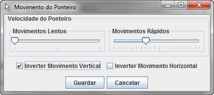
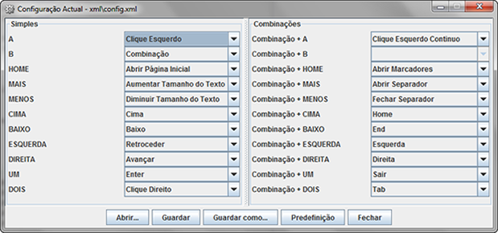

Funcionalidades
Este sistema apresenta várias funcionalidades relacionadas com o sistema operativo Microsoft Windows, com o teclado, com o comando e com o browser.
Permite ao utilizador controlar o cursor do rato de forma precisa utilizando o Wii Remote. O sistema tem 2 velocidades para o movimento do rato, uma mais lenta para movimentos precisos e outra rápida para movimentações do cursor do rato ao longo do ecrã. Além disso o utilizador pode definir essas duas velocidades e inverter o seu sentido. Na figura 1 desta página é possível observar a interface gráfica que possibilita estas alterações:

Figura 1 - Configuração da movimentação do cursor.
A Interface gráfica permite ao utilizador a alteração das funções desempenhadas pelos botões, possibilitando ainda a gravação de múltiplas configurações de botões.

Figura 2 - Configuração das funções dos botões do comando.
O sistema WiiMando permite também a calibração manual do comando e a definição a homepage na função de abertura do browser.